See what I mean
Short-form, branded, long-form, events. Every project is different. The standard isn't.

Video editing for brands and creators who need content that looks polished, moves fast and actually gets watched, without the back-and-forth.
Brazil-based
Tell me about your project →Short-form, branded, long-form, events. Every project is different. The standard isn't.
I don't just edit. I make decisions that save you time, protect your brand and get your content ready to publish without a dozen revision rounds.
Reels, TikToks and Shorts that stop the scroll. I handle pacing, captions, audio and platform formatting, so you don't have to think about it.
✦ Platform-optimized · Ready to post
Interviews, brand films, campaigns and documentaries. Built around your story, your audience and what you actually want people to feel.
✦ Narrative-driven · On-brand · Broadcast-ready
Editing, color grading, sound mixing, subtitles, final delivery. Everything done. Nothing left for you to fix.
✦ Start to finish · Clean files · Zero loose ends
Camera, lighting, framing, direction. I make sure the footage arrives at the edit already looking like something.
✦ Better footage = better final video
Before I edited professionally, I spent years on productions, learning what breaks on set, why footage fails in post and what actually makes a video work before a single cut is made.
That background shows up in every project I take on. I don't just cut clips together. I fix problems you didn't know were there, make decisions that protect your deadline and deliver edits that don't need four rounds to land right.
If you need an editor who gets the brief quickly, communicates without being chased and delivers what he promised, we're going to work well together.
Based in Brazil. Available to anyone, anywhere.
I don't edit randomly. Every cut has a reason: pacing, emotion, attention. I build edits that keep people watching.
The details you won't notice until they're missing. I notice them first.
You'll always know where your project stands. No disappearing acts. No chasing for updates.
I set realistic timelines and I hit them. If something changes, I tell you before it becomes your problem.
Short-form (Reels, TikTok, Shorts), interviews, branded content, podcasts, event videos, documentaries and digital campaigns. If it has footage and a story, I can edit it.
Yes. And honestly, being based in Brazil is an advantage for you. You get professional-quality work at rates that make sense for your budget, with reliable communication and no corners cut. I'm remote-native, async-friendly and I respond within 24 hours.
It's one of my most requested services. I edit for retention, pacing and platform behavior: captions, sound, aspect ratio, all handled. You just post.
Yes. Most projects start exactly that way. Send your files and a brief. I'll take it from there.
I deliver a first cut, you give me consolidated feedback in one round, and I adjust. Clean, structured, no endless loops. Most clients land on final in two rounds.
Fill out the form below with what you need, your timeline and any references you like. I'll reply within 24 hours with a clear path forward.
Whether you have a full brief or just an idea, I'm easy to work with and straightforward to communicate with. Let's talk.
Tell me about your project →No commitment. Just a conversation.